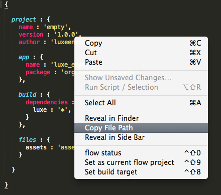
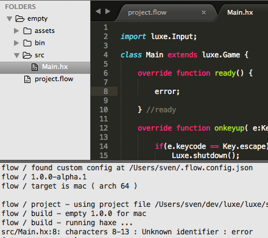

Sublime text plugins
These plugins are for sublime text 3 only.
Install plugins
To install the sublime text plugins for code completion, syntax highlighting and building:
- Make sure you have package control
- Press
Ctrl/cmd + Shift + PPackage Control : Add repository - Do this twice, add
- Press
Ctrl/cmd + Shift + PPackage Control : Install Package - Do this twice, and choose
- sublime_flow
- sublime_haxe_completion
- Restart sublime text
Using the plugins
A luxe project is usually a folder with a flow file in it. This is by default called project.flow but can be called anything as long as the extension is .flow.
The plugin works by specifying which flow file you want to use as your current active project.
File->Open Folder- Open a luxe project folder
- Open the flow file (double click on it)
- Right click inside the flow file
- Choose “set as current flow project” (
ctrl+shift+9)

- Right click inside the flow file, and choose “flow status” (
ctrl+shift+0)

The flow status window has some options:
- selecting the flow file will open the active project file
- selecting the target will show the build dialog window
- the other options are self explained

Code completion
Once you have an active flow file, the code completion should automatically work when using libraries.

Building
To build, press ctrl/cmd + B or select Tools -> Build. This will show the build output, which can be reopened with Tools -> Build Results -> Show Results.
If you have errors, you can double click the error in the console, and it will jump to that line + file in the message. You can press F4 or Shift F4 to cycle errors as well.

Take note that if you have the main, default Haxe plugin installed already, disable it using Package Control : Disable Package.
This one has similar features, but supports the flow build tool chain and reliable code completion. You can toggle between them at any time.
This is a temporary state as this set of plugins were created to modularize the main plugin where possible.